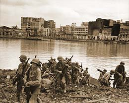

|
j
a v a s c r i p t |
Pg.5/5
February 11, 1945

Pasig River Crossed
MFP: "Americans Cross Pasig" — heavy fighting supposed to be going on in Nichols even though it was reported as "mopping up" last Friday. MacArthur's estimates of casualties for the first four weeks: Japanese, 48,000; Americans, 1,600 killed, 191 missing and 5,276 wounded; total 7,067. (Filipino civilians, uncountable.) "MacArthur sets policy for handling Traitors." They are to be detained for the duration of the war then handed over to the Philippine Government. "Top Prices Set for Food; Convoy of Supplies on Way." Rice is set at P7.20 per sack — real money, of course. I suspect these price limits will prove as unenforceable as previous "fixed" prices. Bob Peyer said Joe's name is not on the Red Cross list of liberated American POWs. Ma can't be deceived much longer; she has already heard of Japanese atrocities to POWs and civilians. Just thinking about it makes me shudder. I'm going to call the Battle of Manila The Disenchanted Victory. It's MacArthur's first and only defeat of the war, psychologically speaking. MacArthur has returned indeed, but not to the same city he left. The Pearl of the Orient has become The Ashes of the Far East. It wasn't his fault. The emergency of Santo Tomas upset his plans a little, and the Japanese did the rest. Technically speaking, the Japanese Navy didn't defend Manila; they scuttled it. There was never any hope of victory or escape for them. Knowing their fate was death, they undertook to take anyone and anything along with them. It's all very embarrassing for the General. His announcement of the taking of Manila was a bit premature though technically correct. The catastrophe of South Manila won't go down so easily once the charm and illusion of this great victory starts to fade. Frankly speaking, for the forces the Japanese employed, particularly navy men untrained in ground combat and with only a month's preparation, they did a pretty good job. It will take such an effort to put this city back on its feet that in the interim between death and rebirth, this city will not only be useless to MacArthur but will require the use of much his technicians and engineers. The Japanese crimes were in the unmerciful massacre of the city's non-military inhabitants and purposeful burning of residential districts. . . . . The Americans plastered Intramuros and the South side from all angles at 2200 without respite. I went to bed when there was no Japanese response, only to wake up again as the artillery restarted on schedule at 0100. Man, what a racket those 155s made! You could hear the screaming shells almost to the target then the explosions and reverberations. Ma woke up nervous and worried, so I sat with her till things died down. It was the first time she had been this scared, and even then, she took it quite well. How many in Manga Avenue can claim to have slept every night in their beds? The firing went on for two hours, drawing a Japanese response in the form of only ONE cannon or mortar shot every two or three minutes, making a peculiar sound that I hadn't heard before. Judging from the shells passing over our house, it was from a new direction — east or southeast of Santa Ana. Sure enough, Santo Tomas was hit a number of times, and fires started in Azcarraga and Sampaloc. It took a while before the Americans targeted it, and then it either signed off and moved or was obliterated. ...ooOoo... |
|
|
|
|